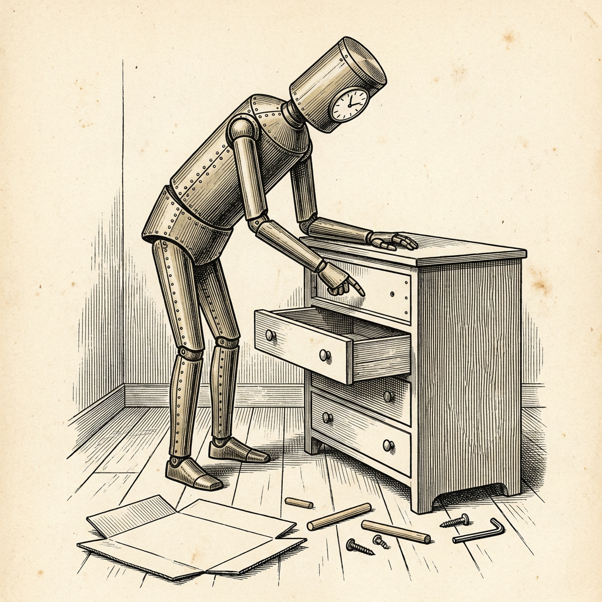

Ur N:r 3 3 oktober 2026
Maskiner besiktigar hopskruvade möbler
Domaren ombedd att vara mycket mild

Firman Epoch AI har i dagarna låtit maskinerna besiktiga hopskruvade möbler. Underlaget utgörs av 60 fotografier av tre möbler från varuhuset IKEA: ett skoställ, en sängram och en byrå. Somliga är riktigt monterade, andra har med avsikt försetts med fel. Som exempel anför firman en bild där laminatet vänts inåt i stället för utåt.
I november 2025 var det bästa resultatet 28 procent, satt av maskinen Opus 4.5 från handelshuset Anthropic. I dag leder maskinen Astra från handelshuset OpenAI med 80 procent, följd av Fable 5.1 och Opus 5 med 70 respektive 61 procent. Astra behöver dock i median tre minuter per fotografi, vilket enligt firman fortfarande är en aning för långsamt för att ge besked i stunden.
Maskinerna från handelshusen Google och Alibaba antar enligt firman ”nästan alltid att det finns ett fel”. Handelshusen Anthropics och OpenAI:s tidiga maskiner felade åt motsatt håll och misslyckades alltför ofta med att alls finna några fel.
Poängen delas ut av ännu en maskin, GPT-5.6 Sol, som har instruerats att vara ”mycket mild”. Det räcker att den granskade pekar ut det felaktiga steget och ungefär beskriver felet.
Ortens brandchef, som i mången år ryckt ut på falsklarm, säger sig känna igen båda sorterna. Veckobladet har för säkerhets skull vänt laminatet på redaktionens bokhylla utåt.
Källa: Epoch AI, ”AI Furniture Assembly Benchmark”, 23 september 2026.